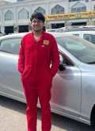

01 · IN PROGRESS · 2025
Autonomous Assistive Robotic Arm
Mobile rover plus robotic arm for inspection, fault detection, screw tightening, and material handling.
I build across mechanical design, automation, machine vision, electronics, and system integration, with a strong interest in automotive and applied robotics.

I am a Mechatronics Engineering graduate from VIT Chennai with experience spanning product design, automation, computer vision, robotics, automotive service, and technical project execution.
Automotive systems, mechatronics, industrial automation, machine vision, intelligent inspection, and engineering product development.
Languages: English, Malayalam, Tamil, Hindi, French (beginner).
Mobile rover plus robotic arm for inspection, fault detection, screw tightening, and material handling.
Vision-based autonomous sorting and inspection using an RGB camera and object detection pipeline.
Modular VTOL platform designed to transform between aerial and ground operation.
Low-cost automated aeroponics setup with environmental sensing, control, and monitoring.
Assistive device developed to compensate for hand tremors and stabilize spoon motion.
Assembly redesign using K-Means clustering and material-similarity adjacency to reduce part count.
Supported technology projects for the Gulf oil and gas sector across requirements, vision-based systems, industrial sensing, AI dashboards, documentation, and project execution.
Assisted with diagnostics, servicing, maintenance, and repair work involving engines, transmissions, brakes, and electrical systems.
Worked on chassis design and system integration for Formula Bharat, alongside business and cost/manufacturing activities.
“Design improvement of screw down stop valve assembly through K Means clustering algorithm.” Published in Cogent Engineering in 2025.
Role in publication: Formal analysis, Software, Validation.
View publicationComponents in the improved valve assembly, a 64.3% reduction reported in the study.